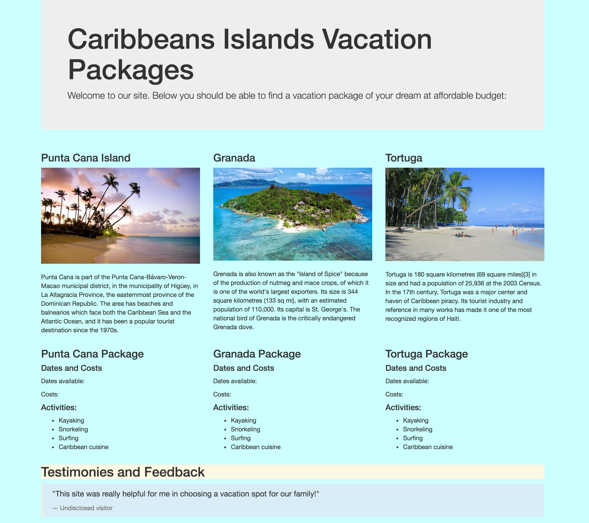
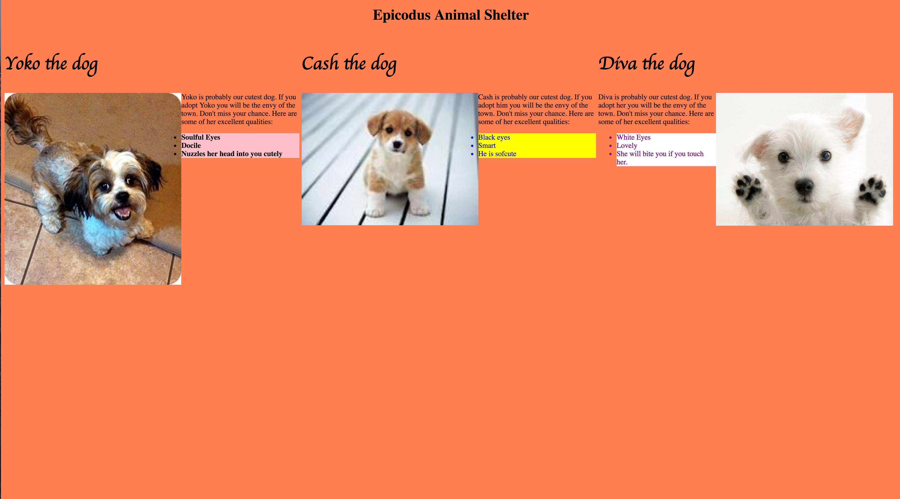
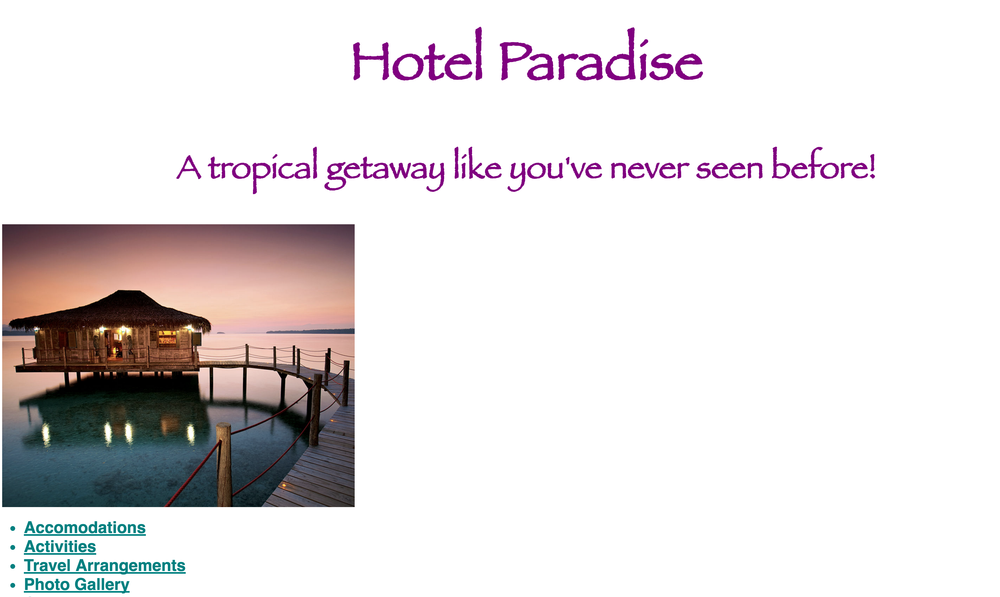

Coding Projects:
-
Caribbean Island Vacation Site

Page for a travel agency with descriptions of island destinations with travel packages offered for each.
-
Gallery Page for Amy Devault Interior Design

Gallery page for an interior design company with before, during and after photos of their work on various sites.
-
Animal Shelter Adoption Page

Page for a local animal shelter displaying images and descriptions of various animals that are up for adoption.
-
Site for Island Resort with Multiple Pages

Site for a luxury island resort including home page with links to separate pages for accomodations, activities, travel arrangements, contact information, and a photo gallery.